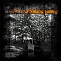
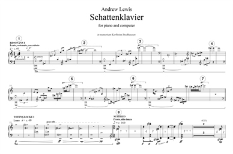

Date of composition: 2009, rev. 2011
Duration: c. 15 min
Format: Piano with live computer processing, 8-channel sound
Premiere: 20 March 2009, Bangor, Wales (UK)
Xenia Pestova (piano)
Bangor New Music Festival
Powis Hall, Bangor University
Recording:Xenia Pestova 'Shadow Piano', audio CD, Innova INNOVA874, 2013  
Excerpt
Score: available from Composers' Edition
(Note: large download – includes 8-channel sound files)
Programme note: (download as PDF)
In memoriam Karlheinz Stockhausen
Schattenklavier ('Shadow-piano') takes as its starting point a fragment of the piano part from Karlheinz Stockhausen’s landmark orchestral work Gruppen (1955-57). This material (heard in quotation towards the end of the piece) takes on something of the role of a theme, upon which are built seven variations. Each of these creates a ‘shadow’ of the original material (or perhaps, a series of different shadows, cast by different lights and displaying varying degrees of stretching or transformation). The computer part too casts its shadows, with different shades of resonant hues, reflections and ripples being cast by the piano’s light.
Although Schattenklavier takes quite a systematic approach to its material (Stockhausen was a pioneer of advanced serial and ‘formula’ techniques), these systems are often left incomplete and unfinished, just as Stockhausen’s life itself seemed to end with a sense of incompleteness: he died in December 2007 just before the start of a year of worldwide concerts intended to celebrate his 80th birthday.
Schattenklavier was composed for Xenia Pestova and premiered by her at the Bangor New Music Festival in 2009. It was revised in 2011. The composer wishes to thank the Stockhausen-Stiftung for permission to use the following recordings: CD 5 GRUPPEN for 3 orchestras and CD 3 KONTAKTE electronic sound of the Stockhausen Complete Edition (www.stockhausenCDs.com). Copyright: Stockhausen-Stiftung für Musik, Kürten (www.karlheinzstockhausen.org)